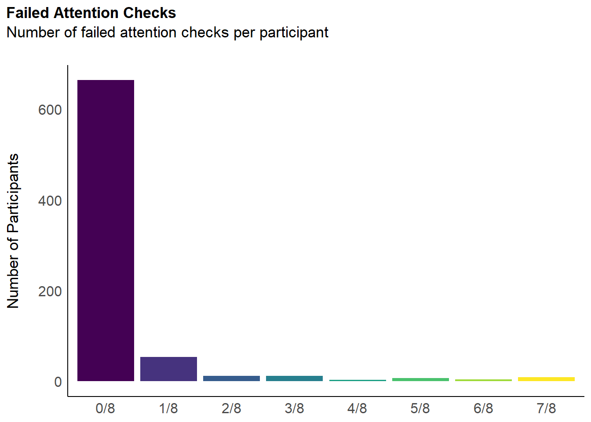
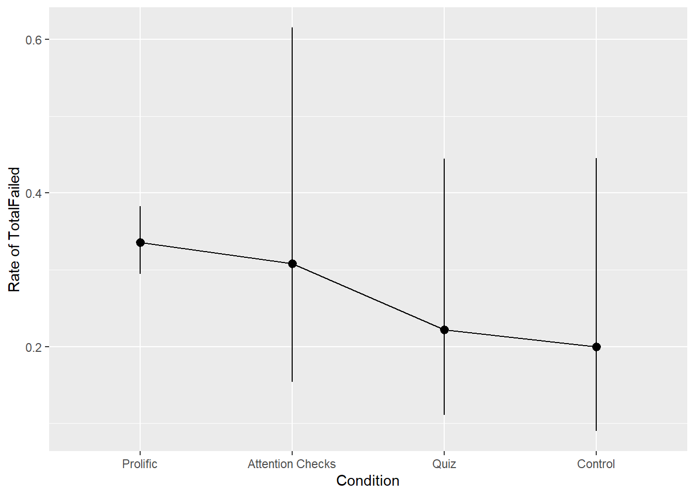

Code
library(tidyverse)
library(easystats)
library(patchwork)
library(ggside)
library(EGAnet)
library(tidygraph)
library(ggraph)
set.seed(42)library(tidyverse)
library(easystats)
library(patchwork)
library(ggside)
library(EGAnet)
library(tidygraph)
library(ggraph)
set.seed(42)df <- read.csv("../../study2/data/rawdata_participants.csv") |>
mutate(Condition = fct_relevel(Condition, "Prolific", "Attention Checks", "Quiz", "Control"))dfchecks <- df |>
dplyr::mutate(
# "I can always accurately answer to the extreme left on this question to show that I am reading it"
A1 = ifelse(MINT_AttentionCheck_1 == 0, 0, 1),
# "I notice that I am being asked to respond all the way to the right"
A2 = ifelse(MAIA_AttentionCheck_1 == 6, 0, 1),
# "I can always accurately choose the lowest option"
A3 = ifelse(IAS_AttentionCheck_1 == 1, 0, 1),
# "Respond all the way to the right."
A4 = ifelse(BodyAwareness_AttentionCheck_1 == 5, 0, 1),
# "I am able to respond all the way to the left"
A5 = ifelse(TAS_AttentionCheck_1 == 1, 0, 1),
# "On the whole, I know I must press the highest option"
A6 = ifelse(PI18_AttentionCheck_1 == 5, 0, 1),
# "I feel that to show I'm being attentive I will press the lowest option"
A7 = ifelse(CEFSA_AttentionCheck_1 == 0, 0, 1),
.keep = "none"
)
dfchecks$TotalFailed <- rowSums(dfchecks)
df$TotalFailed <- dfchecks$TotalFailed
dfchecks |>
mutate(Total = as.factor(paste0(TotalFailed, "/8"))) |>
ggplot(aes(x = Total)) +
geom_bar(aes(fill = Total)) +
scale_fill_viridis_d(guide = "none") +
labs(title = "Failed Attention Checks", y = "Number of Participants", subtitle = "Number of failed attention checks per participant") +
theme_modern(axis.title.space = 15) +
theme(
plot.title = element_text(size = rel(1.2), face = "bold", hjust = 0),
plot.subtitle = element_text(size = rel(1.2), vjust = 7),
axis.title.x = element_blank(),
)
df |>
mutate(Failed = ifelse(TotalFailed >= 1, 1, 0)) |>
summarize(Failed = sum(Failed), N = n(), p = Failed / N, .by="Condition") |>
gt::gt()| Condition | Failed | N | p |
|---|---|---|---|
| Prolific | 89 | 673 | 0.1322437 |
| Attention Checks | 5 | 26 | 0.1923077 |
| Control | 3 | 30 | 0.1000000 |
| Quiz | 4 | 36 | 0.1111111 |
m1 <- glm(TotalFailed ~ Condition, data=df, family="poisson")
m2 <- glmmTMB::glmmTMB(TotalFailed ~ Condition,
data=df,
ziformula=~1,
family="poisson")
m3 <- glmmTMB::glmmTMB(TotalFailed ~ Condition,
data=df,
ziformula=~1,
family=glmmTMB::truncated_nbinom2)
compare_performance(m1, m2, m3)# Comparison of Model Performance Indices
Name | Model | AIC (weights) | AICc (weights) | BIC (weights) | RMSE
-------------------------------------------------------------------------
m1 | glm | 1411.3 (<.001) | 1411.3 (<.001) | 1429.8 (<.001) | 1.107
m2 | glmmTMB | 985.2 (<.001) | 985.3 (<.001) | 1008.4 (<.001) | 1.107
m3 | glmmTMB | 937.5 (>.999) | 937.6 (>.999) | 965.3 (>.999) | 1.107
Name | Sigma | R2 | R2 (adj.) | Score_log | Score_spherical | Nagelkerke's R2
------------------------------------------------------------------------------------
m1 | 1.000 | | | -0.917 | 0.034 | 0.005
m2 | 1.000 | 7.887e-05 | -0.005 | -0.637 | 0.034 |
m3 | 0.101 | 4.867e-04 | -0.005 | | | test_performance(m1, m2, m3)Name | Model | BF
-----------------------
m1 | glm |
m2 | glmmTMB | > 1000
m3 | glmmTMB | > 1000
Models were detected as nested (in terms of fixed parameters) and are compared in sequential order.modelbased::estimate_means(m1, by="Condition", backend="emmeans") |>
plot()